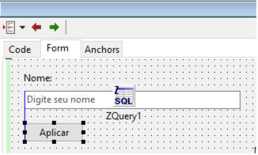
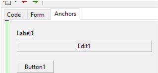

Docagem do editor de formulário
A extensão abaixo é ideal para quem já está acostumado ao fluxo de trabalho do Delphi, onde o editor de formulários ocupa o mesmo espaço que o editor de código, permitindo alternar rapidamente entre eles usando a tecla F12.
Para obter esse comportamento, instale o seguinte pacote na sua IDE:
dockedformeditor
O dockedformeditor trabalha em conjunto com os pacotes AnchorDocking e AnchorDockingDsgn. Juntos, eles funcionam de forma muito estável e harmoniosa, sendo uma alternativa superior ao antigo sparta_dockedformeditor, que apresentava diversos bugs.

Um recurso adicional interessante é a opção ‘Anchors’, que melhora a exibição do formulário ao destacar as posições e o ancoramento dos componentes:

⚠️ ALERTA: Nunca utilize estes pacotes simultaneamente com os pacotes da série Sparta (como o sparta_formeditor) em versões do Lazarus anteriores à 2.0. Isso causa sérias instabilidades, como janelas (ex: 'Fields Editor') que "fogem" para trás da IDE principal. O Anchor Docking é um fork do projeto Sparta que foi amplamente refatorado e melhorado.